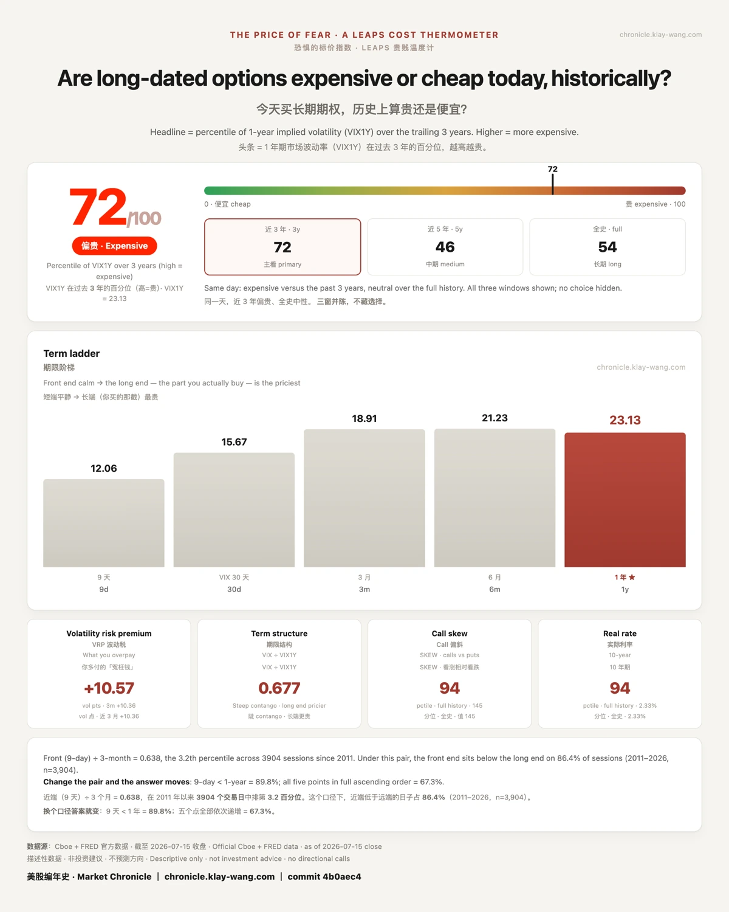

近月在庆祝，而你要买的那一截,一分没降:
期限 7/14 7/15 Δ
9天 13.46 → 12.06 -1.40 ← 塌了
30天 16.50 → 15.67 -0.83
3月 19.30 → 18.91 -0.39
6月 21.52 → 21.23 -0.29
1年 23.28 → 23.13 -0.15 ← 你买的那一截,几乎没动
跌幅严格按期限递减，短端跌了长端的 9.3 倍。Cboe 官方收盘独立复算
斜率(1年 − 9天):9.82 → 11.07,陡了 +1.25。
▸ 11.07 在 2011 年以来 3,904 个交易日里排第 96.7 百分位 ，几乎是 15 年来最陡。
券商轨(IBKR,落库线实测)同向印证:
SPY iv30 一天从 37.8 百分位塌到 21.1(−16.7)，落进一年最便宜的两成
SPY LEAPS(429 天)IV 中位 −0.04，等于没动
涨最多的几只，长端 IV 反而在涨：META +0.70(正股 +3.07%)、GOOGL +0.32、AAPL +0.23(正股 +4.02%,收 327.50 创 52 周新高)
一句话：市场在给眼前的通胀降温欢呼，却没有因此给一年后的保险降一分钱价。这正是这个刻度存在的意义:它只盯你买的那一截。